더인 교육 8일차
들어가며 · 반도체에서 달성하고자 하는 목표 · 목차 · Gate 금속의 변천 흐름 (메모리 / 비메모리) · 핵심 소재 정리 (특징 / 사용 이유 / 녹는점 / 교체 이유) · Deposition · Thin film에서 요구되는 조건 · Thin film 의 종류 · Deposition · CVD(Chemical Vapor Deposition) · Gas Phase (Homogeneous) Reaction · Solid Surface (Heterogeneous) Reaction · Growth vs CVD · 잠깐 Oxidation 공정 복습 · Oxidation과 CVD의 차이 · 그래프 해석 · CVD 분류 · 점심 이후 · PECVD · CCP랑 ICP를 비교 · PECVD · DC Diode, RF Diode, DC Magnetron(Most Popular) · Electormigration · PVD는 물리적인 힘을 사용하지만 절대적이지는 않다. · 공평한 세상인가? · Magnetron sputtering · CVD vs PVD · PVD · High Performance? · ALD · 전구체 · 왜 Single wafer로 진행하는가? · Flow-type reactor, Shower head reactor · Deposition Process Window · SEM · 용어 정리 · 슬라이드별 메모 (86 · 88pg) · Epi 층을 깔아주는 이유 (처음 배움) · TEOS (Tetraethyloxysilane) · SOG(Spin on Glass) · 102pg
1. 들어가며
박형무 강사님
- 무엇을 공부해야할지 모르는 것이다.
- 교육을 통해서 많은 것을 배워 갈 것이라고 기대하지 X . 본인한테 달렸다.
- 무어의 법칙: 2년 동안 패턴 density가 2배 증가한다. (반도체 개발이 되어온 역사)
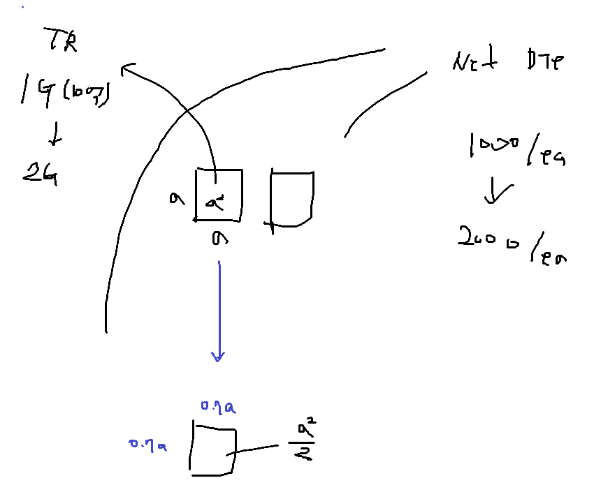
- Wafer에 10억개를 20억개의 Die를 넣고 싶은 것
- 그래서 면적을 50% 만큼 줄여야 하고, 면적을 50%만큼 줄여야 하니까 한 변의 길이가 0.7 만큼 되는 것이다.
- Linear 하게 면적을 반으로 줄이기 위해 한 변의 길이가 이렇게 줄어들었다는 것이다. 20nm → 14nm → 10nm → 7nm → 5nm → 3nm
Q. 5nm 가 어디를 얘기하는 것인가? (항상 궁금해하고, 그냥 받아들이지X, 이런 태도로 공부할 것)
A.
지금 얘기하는 길이는 실제 gate나 channel의 길이가 아니다. 일단 위에서 말하고 있는 길이는 로직 칩의 특정 부분을 말하는 것이다. DRAM 에서는 아직 10nm 공정이 진행되고 있으니까.
대상: “Q. 5nm 가 어디를 얘기하는 것인가? (항상 궁금해하고, 그냥 받아들이지X, 이런 태도로 공부할 것)”
숙제임!
Q. 그럼 왜 DRAM보다 Logic에서 칩이 더 작아야 하는데?
그러면 로직 반도체 얘기인데, 로직 반도체 결국 노드 이름과 gate 길이가 다른 상태이다. Claude에 따르면 1990년대 중반부터 달라지기 시작했다고 한다.
Q. 그럼 왜 1990년대부터 달라졌는데?
A. 옛날에는 실제 노드에서 말하는 길이보다 실제 gate는 짧게 만들었다. 왜냐하면 gate 길이가 짧아져야 전류가 커지고, 전류가 크면 트랜지스터가 더 빨리 동작하기 때문이다. 그리고 이제는 작게 만들고 싶어도 만들 수 없는 한계에 도달했다. (그 이유는 뒤에서 자세하게 살펴볼 예정)
Q. 왜 전류가 크면 트랜지스터가 더 빨리 동작하지?
A. MOSFET의 구조에서 Metal-oxide-semiconductor 구조잖아? 여기에서 트렌지스터를 켠다는 것과 트랜지스터가 빨리 동작하는 것은 구분이 필요하다.
Q. 트랜지스터를 켠다는 것은 무슨 말인데?
A. 트랜지스터를 켠다는 것은 Metal에 양의 전압을 가했을 때 P-type 실리콘 기반으로 다수 캐리어인 정공이 밀린다. 그러면서 공핍층이 먼저 형성된다. 그 다음 소수 캐리어인 전자가 반도체 표면에 도달한다. 이 때 반전이 일어나며 V-I 그래프에서 I가 증가하게 된다. 그리고 이렇게 채널이 형성되었기 때문에 n-type으로 도핑된 Drain에서 Source로 전류(전자는 S→D)가 흐를 수 있게 되었다. 그래서 이걸 트랜지스터를 켠다고 말한다.
Q. 그러면 속도는 무엇을 얘기하는건데?
A. 속도는 결국 Metal에 전압을 가해주고, Capacitor에서 전하가 쌓여서 반대쪽에 반도체 표면에서 전자가 쌓일 수 있게 한다. 이 때 V=Q/C의 공식을 갖고 있고 정전용량 C가 중요하다.
전류 자체는 단위 시간당 흐르는 전하의 양이므로 I = Q/t 라고 쓸 수 있다. 근데 앞에서 Q = CV 식이 있었고, 여기에서 t = Q/I로 바꿔서 쓰게 되면 t = CV/I가 된다. 그러면 속도가 빨라지려면 전류가 커져야하고 그래서 전류가 커지면 시간이 짧아지게 된다는 것이지.
정리하자면 우리는 트랜지스터를 켜는데 빨리 키고 싶다 이거지. 그러니까 빨리 켜기 위해서는 트랜지스터의 capacitor를 얼마나 빨리 채우냐에 따라 달렸다는 것이지. 그리고 그 때 전류가 클수록 capacitor에 전하를 빨리 채울 수 있게 된다. 그렇게 capacitor에 전하가 빨리 채워지면 반도체 표면에 전자가 모이는 속도도 더 빨라진다. 그러면 회로가 더 빨리 동작하게 된다 이거지.
Q. 해당 식에서 전류가 커지려면 어떻게 되어야지?
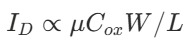
A. Gate 길이 관점에서 보면 gate(L)가 짧아지면 전류가 커진다. 그렇지만 지금은 더 이상 gate가 짧아질 수 없다. Gate가 짧아지면 누설전류가 생기기 때문이다. 그래서 실제 gate의 길이와 Node의 길이가 같지 않다.
Q. Gate가 짧아지면 왜 전류 누설이 생기지?
A. 전류 누설이 생긴다고 이해하는게 맞나? 아닌 것 같은게 조금 더 근본적인 이유가 있을 것이다.
“채널이 짧아지면 소스 쪽 공핍 영역과 드레인 쪽 공핍 영역이 채널의 큰 비율을 차지하게 됩니다.”
이렇게 말한다. 그러면 어떠한 이유에 의해서 게이트가 책임질(?) 전하가 줄어드니 더 낮은 전압에서도 켜진다. 더 낮은 전압에서 켜지니까 전류 누설이 발생하게 된다.
“채널이 짧으면 드레인의 공핍 영역이 장벽 근처까지 와서 드레인 전압이 높을수록 장벽이 낮아집니다.”
여기는 완전히 소자 부분이라서 잘은 모르겠지만 결국 전류 누설이 MOS에서 Oxide에 의해 생기는 상황과 다르다는 것은 구분할 수 있어야 하겠지?
Q. 그러면 Gate가 짧아지는 방식이 아니라 어떤 방식으로 제어하는데?
A. 그러면 다시 수식으로 돌아와야 한다.

더 이상 channel 간 거리인 L을 줄여서 I를 높일 수는 없다. 그 이외에 이동도를 높이거나, 산화막의 두께를 얇게 하거나, 채널 폭을 늘리는 방향성이 된다.
이동도를 높이기 위해서는 Strained Si, SiGe 채널을 사용한다? (여기는 공부가 아예 안됐다.)
Cox가 커지기 위해서 High-k 유전체를 사용한다. 그리고 Gate에 Poly-Si가 아니라 어떤 금속? 근데 절연체를 High k로 바꾸면 gate도 금속 gate로 바꿔야한다고 하는데? 그리고 이걸 하나의 세트로 HKMG (High-k Metal Gate) 라고 하는데?
W가 커지기 위해 FinFET, GAA 구조를 사용한다. 즉 Gate를 감싸는 면적을 점차 늘려가고 있다.
Ref) 평면형 MOSFET에서 W 길이
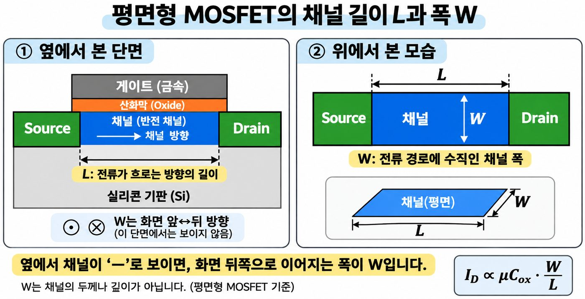
결론
5nm는 실제 게이트나 채널의 길이를 말하는 것은 아니다. 로직 반도체에서의 세대 이름표이다. (옆 동네 DRAM은 1x,y,z 1a,b,c 사용중)
옛날에는 명칭과 게이트 길이가 비슷했고, 90년대 중반에는 속도를 위해 게이트를 이름보다 줄였고, 지금은 게이트가 짧아지면 제어가 어렵기 때문에 실질적인 게이트 길이가 곧 노드 이름이 아닌 상태이다.
따라서 지금은 채널의 길이를 줄이기 보다 아래 식에서 이동도, Capacitor, 너비를 키워서 전류를 키우는 방향으로 간다. (전류를 키우는 건 결국 for 스피드 뭐 결국에 전류누설을 줄이는건 power와도 관련있지)
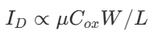
2. 반도체에서 달성하고자 하는 목표
(1) Speed
(2) Power
- 누설전류를 줄인다.
1. Dielectric → Isolation → Device to Device, Layer to Layer
- D to D는 소자끼리 절연을 시켜주는게 - LOCOS(Activation Area 침범), STI
– LOCOS Active 영역이 줄어들면 어떤 일이 벌어지는데? STI
- L to L - MOS, IMD, ILD, PMD
MOS
– MOSFET에서 Source Drain 사이에 channel을 형성하기 위해서 Oxide 사용
– M 쪽에서 + 전압이 걸리지만 oxide를 통과하면 X
– VDS 쪽에도 양의 포텐셜이 걸리고?
– Oxide 두께가 12Å 정도 되면 터널링 현상이 생김 → High K 사용
– ID ∝ μCoxW/L 에서 I가 커지기 위해서는 μ(이동도) 커지고, Cox 커지고, W 커지고, L 작아지고
– Cox = εA/d → d를 더 이상 줄이기 어려우니까, 유전상수를 키우고자 한다. (High k)
2. Metal → Interconnection → Contact (Metal 간의 contact Via), Al/Cu, Silicide
목표: Dielectric 전류가 잘 흐르지 않게 만들어주는 것, Metal은 전류가 잘 흐르게 만들어주는 것 (=비저항이 낮은 소재를 사용)
→ 그래서 이걸 Thin film을 통해서 만들고자 하는 것이다. 그 Thin film 공정에는 CVD, PVD, ALD가 있는 것이고, Metal 공정은 따로 빼서 존재하는 것이다.
대상: “LOCOS Active 영역이 줄어들면 어떤 일이 벌어지는데? STI”
숙제!
대상: “ID ∝ μCoxW/L”
수식에서 각각의 값들을 커지게 하기 위해서는 어떻게 해야하는지 각 기호별로 충분히 설명할 수 있게 공부하기
3. 목차
- Input → Output 을 제대로 하고 싶은데 그 중간에서 장비들 수 백개가 존재. 걔네들간의 상관관계를 정확히 규명하기가 어려움 (AI, 빅데이터 사용)
- Al는 pure할 때 660도 정도에서 녹더라. 그래서 Poly-Si을 사용한 것이다. (이것도 이래서 그렇구나)
→ Gate에 Al이 아니라 Poly-Si을 사용한 이유는 녹는점 때문이다. Al의 녹는점은 660도인데 이후에 Source, Drain을 도핑 한 뒤에 열처리 공정을 할 때 그 온도를 버티지 못하고 녹아버린다. 따라서 녹는점이 1400도인 Poly-Si를 사용한다.
4. Gate 금속의 변천 흐름 (메모리 / 비메모리)
| 구분 | 1단계 | 2단계 | 3단계 | 4단계 |
|---|---|---|---|---|
| 비메모리 (로직) | Al 게이트 (1959년 ~ 1970년대 초) | Poly-Si (1970년대 중후반) | Poly-Si + salicide (TiSi₂, CoSi₂) | HKMG gate-last (Intel 45nm, 2007) 일함수 금속 TiN·TiAl 계열 + fill 금속 W 또는 Al |
| DRAM (워드라인) | Poly-Si (1970년대) | polycide: Poly-Si + WSi₂ (1980년대 후반) | polymetal: Poly-Si + WN/W | buried word line: TiN/W |
| NAND | Poly-Si 컨트롤 게이트 | Poly-Si + W 워드라인 (TiN·TaN 장벽) | TANOS: TaN 금속 게이트 + Al₂O₃ (Samsung, 2003년 발표, 2006년 제품) | 3D NAND: TiN·TaN 장벽 + W 금속 게이트. |
5. 핵심 소재 정리 (특징 / 사용 이유 / 녹는점 / 교체 이유)
| 소재 | 특징 | 사용 이유 | 녹는점 | 다음 소재로 교체한 이유 |
|---|---|---|---|---|
| Al | 저항이 낮고 가공이 쉬움 | 초기 MOSFET의 게이트 | 660°C | 게이트를 만든 뒤 고온 열처리(약 1000°C)를 견디지 못하고 Si와 합금되어 단락이 생김 → Poly-Si |
| Poly-Si | 도핑해서 쓰는 반도체성 도체 | 고온에서 안정적이라 자기정렬이 가능 | 약 1414°C (※) | 저항이 높아 느림, 얇은 절연막에서 누설이 늘어남 → 저항은 silicide·금속으로, 누설은 HKMG로 보완 |
| WSi₂ (polycide) | Poly-Si 위의 텅스텐 규화물 | 워드라인 저항을 낮춤 (DRAM) | 약 2160°C | 좁은 선폭에서는 저항을 충분히 낮추기 어려워 금속 strapping이 필요 → polymetal |
| TiSi₂ / CoSi₂ (salicide) | WSi₂보다 저항이 훨씬 낮음 | 로직 게이트 저항을 낮춤 | 약 1540°C / 약 1326°C | DRAM은 고온 공정에서 열화되어 쓰기 어려움. 로직은 금속 게이트가 들어오며 교체 |
| W | 고융점 금속, 저항 낮음 | 워드라인 저항을 polycide의 1/3 이하로 줄임, 매립 워드라인과 게이트 fill | 약 3422°C | polymetal 때는 열공정 중 산화됨 → 산화 공정을 따로 제어하고 보호막을 둠. 이후 셀은 TiN/W 매립 구조로 |
| TiN | 전도성 질화물, 장벽·일함수 조절 | W와 Si 사이 장벽, PMOS 일함수 금속, 매립 워드라인 | 약 2950°C | 단독으로는 저항이 높아 TiN/W 이중층이 됨 (이 이중층은 선폭이 줄면 gap-fill이 어려움) |
| TiAl 계열 | NMOS용 낮은 일함수 금속 | NMOS 일함수 조절 | 약 1460°C (TiAl) | 게이트 공간이 좁아지며 fill이 어려워짐. 일함수 금속이 공간을 거의 다 채우는 방향으로 가고 있음 |
| TaN | 장벽·일함수 후보 | NAND 장벽층, TANOS의 금속 게이트 | 약 3090°C | (뚜렷한 교체 이유는 확인하지 못함) |
6. Deposition
(1) PVD
- 물리적으로 가격해서 원자가 튀어나와 반대편 Wafer에 증착
- 금속 증착에 사용하며 금속의 경우 DC power를 사용. 절연체는 RF power를 사용
- PVD는 step coverage가 좋지않고 gap fill 능력도 매우 떨어진다.
(2) CVD
- 플라즈마를 쓰면 더 저온에서 가능한 것이다.
- Step coverage가 좋고, gap fill 능력이 좋다.
(3) ALD
- 원자 층 1층 단위로 증착된다.
7. Thin film에서 요구되는 조건
- 다시 돌아와서 Thin Film에서 요구되는 것은 Dielectric이 전류가 새지 않기를 Metal에서는 저항이 낮기를 원한다.
- Metal 불순물이 들어가면 저항이 커진다
- Metal에서 빈 공간이 생기면, 주변의 막질이 얇아짐 → 저항이 높아짐 → Migration이 일어남
- Oxide 두께가 얇아지면 Breakdown voltage가 낮아지겠지?
8. Thin film 의 종류
Conversion
(1) Thermal oxide
- Si이 45% 소모되어서 SiO₂가 만들어진다. Si가 45만큼 소모되어서 SiO₂ 100이 형성된다. (외워라!!)
Wafer의 Si를 열 산화 공정과 Gas를 사용하는 증착 공정을 구분할 수 있어야한다.
Si + O₂ → SiO₂
SiH₄ + O₂ → SiO₂
(2) Doping
- Intrinsic
- Extrinsic
9. Deposition
(1) PVD
- Evaporation
- Sputter
(2) CVD
- CVD
LPCVD
- HDP-CVD
- Epitaxy
- ALD → CVD 방식에 ALD가 있다고 봐야한다.
(3) Other
- Electrochemical
– 구리 전기화학 도금
- Spin-on
– SiO₂를 점도가 낮은 물질을 써서 도포하고 Annealing 한 다음 CMP 하는 것음 Spin On Glass라고 한다. 여기에서 SiO₂가 Glass니까.
10. CVD(Chemical Vapor Deposition)
- A(g) + B(g) → C(s) + D(g)
- A랑 B는 전구체
- 이렇게 되어서 D가 부산물로 날라가야한다. 그래서 휘발성이 높아야한다. 만약에 날라가지 못하면 defect이 되는 것이다.
- 용융점이 높아서 가공하기 어려운 재료들을 증착할 수 있다.
- W는 녹는점이 3000도 정도 되는데, 이걸 PVD 방식으로 할 수가 없다. 그런데 CVD에서는 WF₆ 처럼 화학반응을 이용해서 만들 수 있다는 얘기이다.
- Step Coverage
- Step과 Step 사이에 증착이 될때 bottom이나 side 쪽에 제대로 되지 않는 것을 말함
11. Gas Phase (Homogeneous) Reaction
- 기체상에서 일어나는 반응. 그렇게 반응하고 나서 wafer 위로 떨어지는 것이다.
- 균일도가 낮고 particle이 많아서 우리가 원하지 않는 방향이다.
12. Solid Surface (Heterogeneous) Reaction
- Wafer 표면까지 내려가서 그곳에서 반응한다.
- 그래서 박막이 wafer 위에서 반응한다.
Q. 그러면 어떻게 Gas 상태에서 반응하지 않고 표면에서 가서 반응할까?
A. 압력 낮추면, m.f.p 키워지고, Gas 상에서 충돌하지 않고 잘 가서 wafer 위로 안착한다.
13. Growth vs CVD
- Oxide growth는 Si의 결합을 깨고 SiO₂가 형성되어야 하니까 높은 온도가 필요할 것이다.
- CVD 방식은 그것보다는 낮은 온도에서 가능하다.
대상: “Oxide growth는 Si의 결합을 깨고”
높은 온도에서 하는 건 알겠는데, 이 이유에 대해서 이렇게 설명할 수 있어야겠지?
14. 잠깐 Oxidation 공정 복습

15. Oxidation과 CVD의 차이
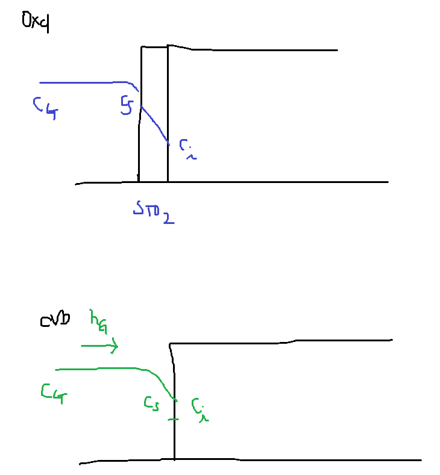
- ref) Flux는 단위시간당, 면적당 입자 수
- CVD에서는 확산해서 들어가는 SiO₂가 없는 상황에서라고 생각하면 된다.
- 근데 Ci는 필요없는거 아닌가? → ㅇㅇ 필요 없으니까 수정해놓기
여기서부터는 천천히 복습하기
대상: “CVD에서는 확산해서 들어가는”
조금 더 공부해서 정리해놓기
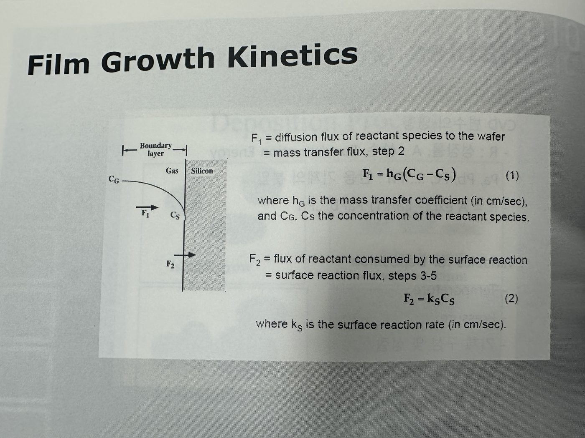
- F=F₁=F₂ 두고 계산하기

- F는 단위면적 단위시간 당 지나가는 입자의 개수를 말하는 것
- N라는 것은 단위면적을 성장시키기 위해 필요한 입자의 개수
- 그래서 g는 성장 두께를 말한다.
(1) ks ≪ HG
- 가스 공급은 잘되는 데 표면에서의 반응이 느린 경우
- 따라서 반응은 ks에 의해서 결정된다.
(2) ks ≫ HG
- 반응은 잘 일어나는데 Gas 공급이 잘 안되는 경우
- 따라서 반응은 HG에 의해 결정된다.
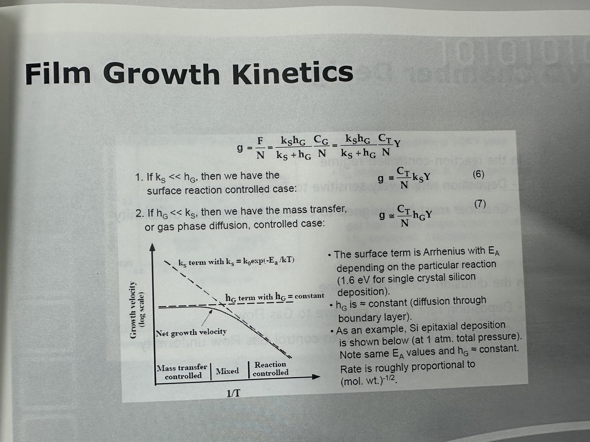
- ks와 HG 결정 구간 각각의 식을 다시 구해보며 복습하기!
- 오른쪽은 표면 반응 / 왼쪽은 Mass transfer에 의해 결정
16. 그래프 해석
(1) ks (표면 반응 속도 상수)
ks = k0 exp(−EakT)
가스 공급이 표면 반응보다 더 빠르게 이뤄질 때 표면 반응속도에 의해서 전체 속도가 결정된다. 표면 반응 속도는 온도에 지수함수적으로 비례하게 된다.
외부에서 gas가 유입되고 wafer 표면에서의 반응 속도가 느려야 다소 균일한 상태에서 증착 공정이 진행될 수 있다. 따라서 표면 반응이 속도에 지배적인 영향을 끼칠 때의 온도 구간에서 가능한 온도를 높이면 증착 속도를 확보할 수 있다.
(2) hG (기체상 물질 전달 계수)
hG ∝ TP2/3
이 때 압력을 낮추게 되면 hG 식이 y축으로 상승하지만 실제로는 압력 자체가 감소하기 때문에 전체적인 속도는 느려지게 된다. 그래서 고온 범위까지 사용할 수 있는건 맞는데 LPCVD는 속도가 느려진다. 그렇지만 품질 측면에서 보면 LPCVD가 더 고온에서 공정이 가능하니 막의 퀄리티가 좋다
17. CVD 분류
ref) Etch에서도 Plasma 사용해서 HDP 형성
CCP 이온화 정도 10⁻⁵~10⁻⁶
ICP 이온화 정도 10⁻²~10⁻³
대상: “CCP 이온화 정도”
이런 이온화 정도도 외우자
- Pressure 낮 → m.f.p → 직진성 좋아짐 → Step coverage 좋아짐
- Pressure 낮 → Gas 양이 줄어들면 depo rate이 줄어든다. 이건 또 Temp를 높여서 해결하려고 한다. (LPCVD)
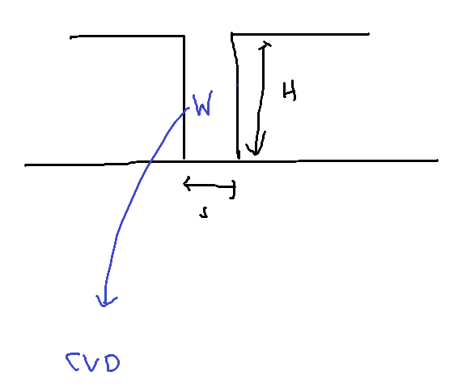
- PVD는 step coverage가 낮기 때문에 contact 처럼 깊은 곳을 채우기가 어렵다. 그래서 CVD로 진행하려고 한다.
- 실제로 W 같은 경우 CVD로 바꿔서 증착을 진행하게 된 것이다. 왜? PVD로는 높은 종횡비를 갖는 곳을 채울 수 없으니까
→ 모든 Metal 이 CVD라는 소리는 아니고, PVD로 해야하는게 있지
- APCVD는 900도 정도에서 진행한다. 상압에서 진행하니까 defect도 많이 생기겠지. 그래서 LPCVD를 사용하게 된다.
- 상압에서 0.1Torr ~ 1Torr까지 줄이게 되면 LPCVD로 사용하는 것. 아까 말했던 것처럼 압력이 낮으니까 온도를 높여서 Depo rate를 확보한다. (Gas 량 자체가 줄어드니까 온도를 높여서 입자 간 반응성을 높인다)
→ Step coverage가 좋아지고, 균일도가 좋아진다.
- LPCVD로 만드는 물질들
(1) Poly-Si
(2) Si₃N₄
(3) SiO₂
- PECVD
- HDPCVD
대상: “상압에서 0.1Torr ~ 1Torr까지 줄이게 되면 LPCVD로 사용하는 것.”
이런 실질적인 압력 범위를 외우자
대기압의 1/760, 1/7600
18. 점심 이후
<외국계>
ASML
AMAT
LAM R
TEL
KLA
- 문제가 생기면 HQ(본사)로 간다
- C/S 엔지니어 들은 문제가 생기면 본사에서 문제를 해결해주면 그걸 전달해주는 역할 5년 뒤? 10년 뒤는?
<한국>
SEMES
Wonik
Jusung
Eugene
PSK
KCT
- 문제가 생기면 본사로 가고 거기에서 의논하면서 경쟁력이 생기는 것이다.
- 개인도 경쟁력을 확보해야한다. → 커리어 패스를 어떻게 할 것인지? C/S로만 계속 있을건지?
19. PECVD
- 1~10 Torr 이 정도 된다는 의미가 Gas량이 이정도이다.
- 반응성이 좋은 라디칼들에 의해서 반응이 빨리 일어나게 한다.
- SiH₄, O₂가 들어간다는 말은 Depo gas가 들어간다고 말하면 된다. 그림은 CCP type
– 여기에서 Gas를 무엇을 집어넣는가에 따라서 Depo인지, Etch인지가 결정되는 것이다
- “원하지 않는 부산물 필름이 남는다”
– SiH₄ → SiH₃ + H
– SiH₂ + H + H
– Si + H + H + H
→ 이렇게 다양하게 생기게 되는데, SiH₃ + H가 제일 많다.
→ SiH₃ 여도 여기에 남는 공유 결합에 O가 붙을 수도 있는 것이다. 우리가 원하는건 SiO₂인데, 실제로는 그렇지 않다는 것이지.
Q. RF 플라즈마 사용하는 이유?
A. 절연체를 제작하려고 하지만 DC를 걸어주면 전압차가 점점 줄어들게 되고, 플라즈마가 없어지게 된다.
20. CCP랑 ICP를 비교
- CCP에서 Depo는 위쪽 전극에 건다
- ICP에서 RF 파워를 두 개 사용
21. PECVD
- 주파수가 높을 때는 Tensile stress가 걸린다.
- 주파수가 낮을 때는 Compressive가 걸린다.
대상: “주파수가 높을 때는 Tensile stress가 걸린다.”
왜 그런지 찾아보기
Q. 왜 주파수가 높을 때는 Tensile stress가 걸리고, 낮을 때는 Compressive stress가 걸리는가?
A.
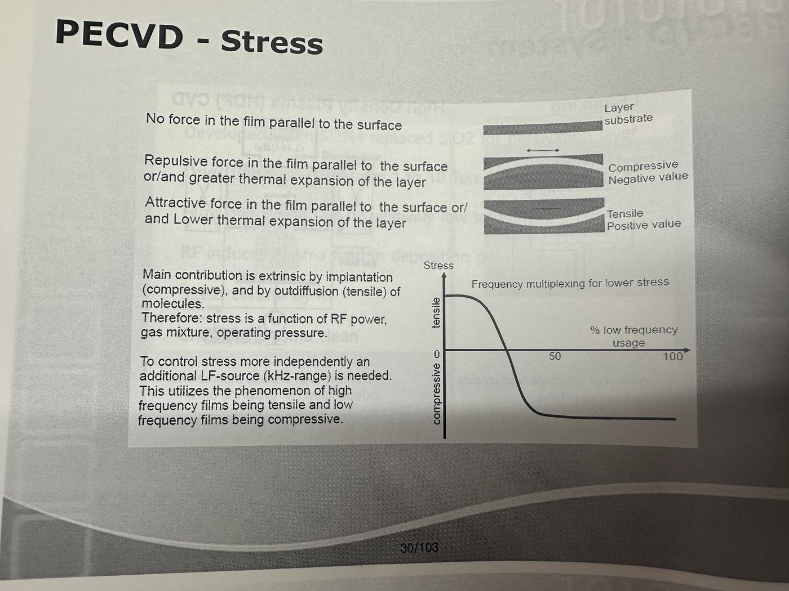
- 주파수가 낮을 때는 이온도 전기장의 변화를 따라가게 된다. 따라서 이온이 웨이퍼에 더 큰 에너지로 부딪히며 막 안으로 들어가게 된다. 이에 따라 원자가 격자 사이로 들어가게 된다. 따라서 막은 늘어나고 싶은데 아래 기판이 잡고 있어서 Compression stress가 걸리게 된다.
- 주파수가 높을 때는 전자만 전기장을 따라가고 이온은 거의 제자리에 있다. 그래서 앞선 상황과 다르다. 그리고 분자가 막 밖으로 빠져 나가면서 Tensile Stress가 걸린다.
대상: “Q. 왜 주파수가 높을 때는 Tensile stress가 걸리고, 낮을 때는 Compressive str…”
이 답변이 맞는지는 물어봐야 할 듯
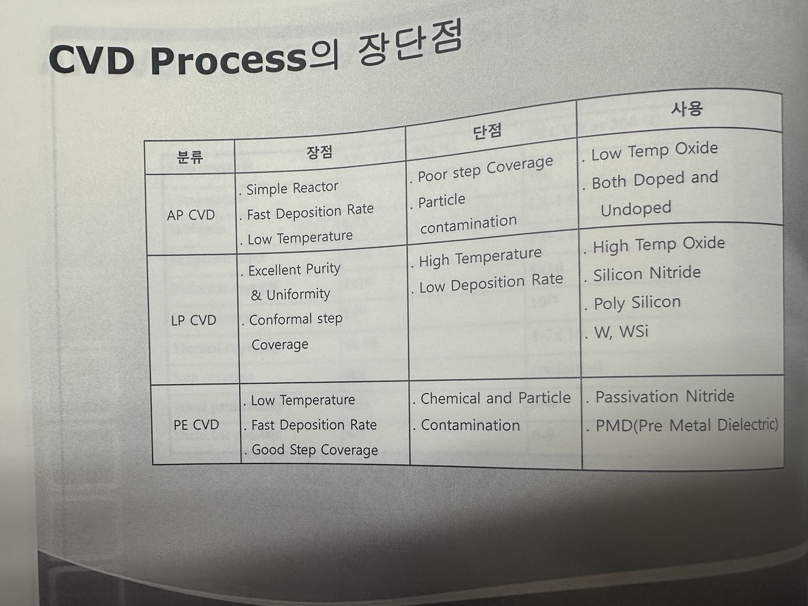
(1) APCVD
- Si₃ 로 고정이 된다.
(2) PECVD
- Siₓ 로 위에 봤던 것처럼 고정되지 않는다.
- 반도체 back-end에 많이 사용함
- Tetra ethyl ortho silicate - 4개의 에틸기 (-C₂H₅) ortho는 반대 위치
– 원래는 액체인데 기화시켜서 사용한다.
(3) MOCVD
- W 같은걸 CVD를 통해서 제작
Q. Metal은 왜 PVD로 증착하는가?
A.
- 저항이 낮아야한다 = 전류가 빠르게 흐른다. 순도가 요구되기 때문에 금속은 CVD가 아니라 PVD를 선호하는 것이다.
- 반도체에서 99.9999% 의 순도를 요구한다.
- Al target에 요즘은 0.5% 정도 Cu가 들어간다. 이걸 화학 반응으로 컨트롤이 가능한가? 여기에서 하는말은 target 자체는 PVD의 재료라서 target을 만드는 것은 가능하다는 것이지. 근데 이걸 Gas 상태에서 반응해서 99.9999% 의 순도를 갖게 만들 수는 없다는 것이다.
- 결국에는 Sputtering을 통해서 순도를 얻을 수 밖에 없다. 왜? 저항이 낮아야하니까 어떻게? 불순물이 적어야 해 왜? 전류가 빨리 흘러야 하니까 왜? 반도체는 빨라야하니까. (반복)
- 요약: Target의 순도는 조절 가능하지만, Gas에서 반응물의 순도는 컨트롤하기 어렵다.
대상: “저항이 낮아야한다 = 전류가 빠르게 흐른다.”
잘 챙겨가기. 이걸 위에서 대답 못했음
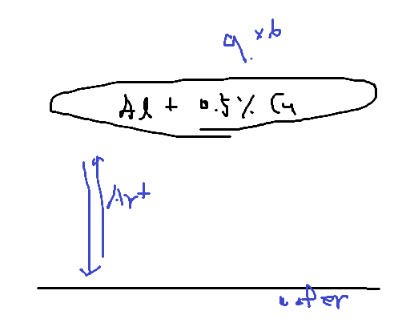
- Cu를 0.5% 섞어주는 것은 electromigration을 방지하기 위해서이다.
→ Electromigration이 일어나면 전자가 원자에 운동량을 가해 원자들이 이동하게 된다. 밀려간 곳은 Void가 생기고, 원자가 쌓인 곳에는 Hillock이 생긴다.
이때 Cu가 섞이게 되면 주로 결정립계에 위치하게 된다. Al은 결정립계를 따라 이동하게 되는데 Cu가 결정립계에서 길을 막고 있으니 이동이 억제된다.
대상: “Cu를 0.5% 섞어주는 것은 electromigration을 방지하기 위해서이다.”
왜 Cu를 섞어주면 Electromigration이 방지되는데?
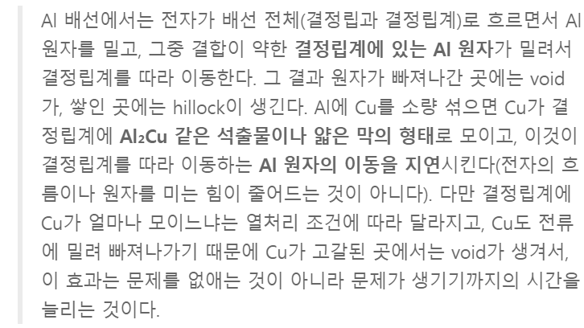
→ 아직 전혀 답변이 완벽하지도 않고 이해도 안됐다. 신소재공학과라면 이런 부분들을 잘 이해하고 있는게 맞다. 세라믹공학을 살펴보던, 금속공학을 살펴보던 전공책 꼭 다시 펴서 해당 내용 다시 정리해라
- PVD의 단점은 step coverage가 안좋다는 점이다. Collimator를 사용해서 보완해주려고 하지만 근본적으로 Step coverage가 안좋다.
- 그리고 CVD는 공유결합이지만 PVD는 아니다보니 접착력도 안좋고, 증착속도도 느리다.
– PVD에서 운동에너지를 갖고 충돌해도 튕겨져서 원자가 떨어져 나갈 때 자유낙하 하면서 에너지를 잃는다?
– 머리로는 소복히 쌓인다고 생각하기
대상: “하지만 근본적으로 Step coverage가 안좋다.”
이걸 정확히 설명할 수 있어야겠지?
22. DC Diode, RF Diode, DC Magnetron(Most Popular)
- Magnetron을 사용하는 것은 증착 속도를 높이기 위한 방법이다.
23. Electormigration
대상: “Electormigration”
여기는 전공책 펼쳐서 다시 공부해보자
- 단결정: 원자가 결합하고 있는게 전체 단위에서 반복된다.
- 다결정: 반복단위가 짧은 거리까지만 유지
- 무정형: 반복단위가 전혀 없는 경우

저항 = 전자가 이동하기 어려운 정도
- 결정립계를 따라서 이동할 때 어려운 정도를 생각하면 구불구불 한 정도가 심한 결정립이 작은 쪽에서 이동하기가 더 어렵다.
- Annealing을 하는 이유는 결정립 자체를 키우기 위해서이다.
24. PVD는 물리적인 힘을 사용하지만 절대적이지는 않다.
대상: “PVD는 물리적인 힘을 사용하지만 절대적이지는 않다.”
이번에 처음 알았음. TiN을 이렇게 만들고, 그렇기 때문에 화학적이라는 것이라는걸
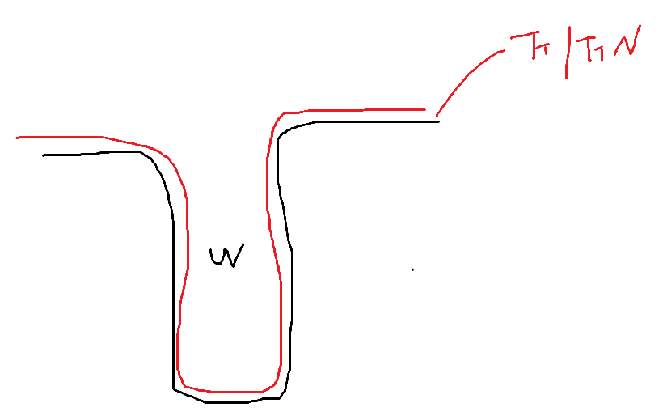
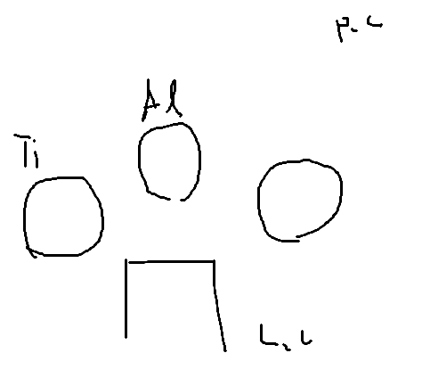
- Ti를 증착하는 Chamber가 있고, TiN도 진행하는 Chamber가 있을 수도 있겠지만 Ti 를 증착해놓고 N을 반응 시키면 TiN이 형성된다.
- 그래서 이걸 Reactive Sputtering 이라고 하며, Ti에 N이 화학적으로 TiN을 만들기 때문에 화학 작용이 포함되어 있는 것이다.
- Ti를 때릴 때 N을 화학반응으로 만들게 되면 Wafer 쪽에서만 얌전하게 TiN이 형성되는게 아니고 Target 물질에서도 TiN을 형성하며, 이에 따라 sputtering 효율이 떨어질 수 있다.
- Sputtering 을 진행할 때 target 도 갈아줘야한다. 소모품이라는 점
25. 공평한 세상인가?
- 투입 대비 반응이 있는 사회이지 않은가? 왜 열심히 하는데? 돌아오는 걸 생각하라는 것이지. 노력을 안하고 보상을 바라면 그게 문제가 있는 것이지.
- 남들보다 공부하는 데 시간이 오래 걸리면 인정하고 남들보다 더 하면 되는 것이다.
26. Magnetron sputtering
- Sputtering 을 진행할 때 target 도 갈아줘야한다. 소모가 빨리 된다.
27. CVD vs PVD
CVD
- CVD에서는 Step coverage가 좋다.
- Alloy (아까 앞에서 봤던 Al+Cu) 이런걸 Gas 형태로 만들기가 어렵다.
28. PVD
- PVD에서 화학적인 반응이 아예없는 건 아니지만 물리적 반응이 대부분이다.
- Target을 Alloy target으로 만들면 된다.
29. High Performance?
- uniformity는 사실 uniform 하지 않은 정도를 의미한다. (언제 들었던 얘기)
- Wafer to Wafer / Wafer in Wafer
대상: “uniformity는 사실 uniform 하지 않은 정도를 의미”
Uniformity가 3% 라고 하면 3% 균일한게 아니라 3%만큼 불균일하다는 뜻이지만 Uniformity라는 용어 자체는 균일도를 의미해서 그렇다

- Cleaning 할 때도 Notch가 위로 향해 있는 채로 넣었다가 뺌. 이 때 웨이퍼 안에서도 세정 용액에 머무는 시간이 다르다.
- Pattern Density에 따른 Loading effect (이거 Etching 말고도 Photo 에서도 얘기하는건가?)
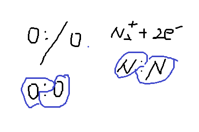
- 라디칼은 분자가 공유결합이 끊겨서 해리되어 만들게 된다. 물론 한쪽에 몰려서 갈 수도 있음.
- 그리고 N₂가 분리될 때 라디칼로 쪼개질 수도 있고, 이온화될 수 있는 것임. 플라즈마 안에서는 그렇게 다양하게 존재하는 것이다.
30. ALD
대상: “ALD”
이건 그냥 기본 중에 기본 내용이고, 조금 더 자세하게 알고 있어야지
A(g) + B(g) → C(s) + D(g)
- 전구체 A가 갈 수 있는 곳이 한정되어 있으니까, A가 붙을 자리에 가서 자리에 위치하고 있는 것이다. 1000개가 붙었다고 해보자. 남은 것은 purge를 통해서 불어낸다.
- B는 A의 자리에 가서 붙는다. 그리고 나서 남거나 부산물은 purge를 통해서 불어낸다.
- 그래서 이걸 Self-Limiting process라고 한다. 왜 A가 붙을 수 있는 자리가 저장되어있으니까.
신소재공학과
- 머터리얼을 하는 나라는 일본에도 있고, 미국에도 있다. 넓게 봐라
Ref) Pulsed plasma
- Etching 할 때 high A/R을 위해서 사용한다.
31. 전구체
- Al(CH₃)₃ 를 사용
- 한 cycle을 돌리면 1.2Å 만큼 쌓인다. 시간이 오래걸리겠지?
- CVD에 비해서도 Pulse 하느라고 소모되는 gas 량이 늘어나겠지?
32. 왜 Single wafer로 진행하는가?
- 결국에는 균일도를 좋게 만들어주기 위해서 batch type보다는 single type을 선호하고 있다. 그렇지만 TAT 가 느려진다. 그래서 생산성이 낮아지니까 다시 semi batch type 같은 것을 고려하고 있다.
- cleaning도 균일도를 높여주려고 single type을 사용한다.
33. Flow-type reactor, Shower head reactor
- 어떤게 더 효율이 좋은가? 퍼포먼스가 좋은가?
- 그냥 잘 만드는 회사에 달렸다. 방법 자체가 절대적으로 좋다 그런건 없다.
34. Deposition Process Window
- Incomplete Rxn은 반응이 충분히 일어나지 않는다. 온도가 낮으니까?
- 온도가 높으면 붙었던게 떨어져 나갈 수 있다.
- Condensation은 그냥 쌓인다고 되는게 아니라 실질적으로 막이 형성되었는가임
35. SEM
- 광학계는 렌즈를 사용해서 Focusing 하고, SEM은 자기장을 이용해서 Focusing?
36. 용어 정리 · 슬라이드별 메모 (86 · 88pg)
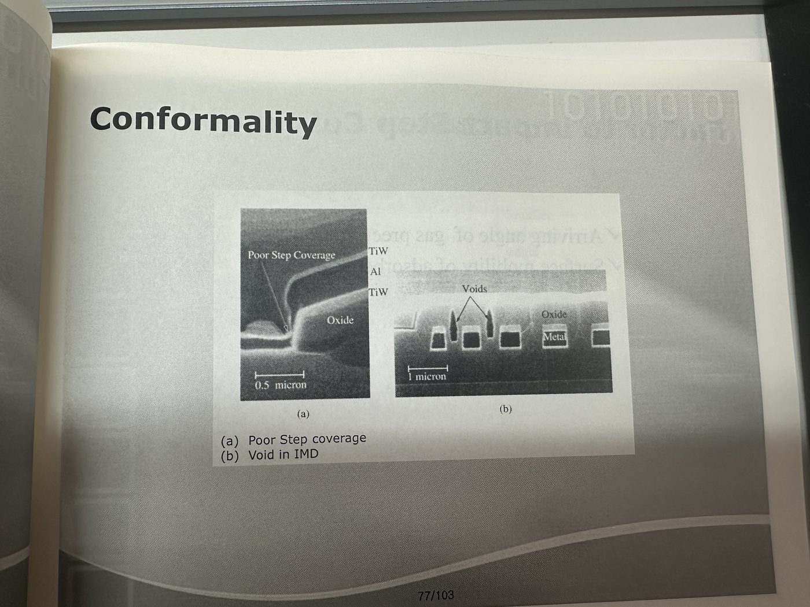
전공 PT에 가면 우측의 사진을 주고 사진 주고 어떤 문제가 있는지 물어본다고 함.
- Metal 간의 거리(=space)가 좁아짐에 따라서 Void가 생겼을 것이다.
- 그리고 Void 크기 자체도 왼쪽의 거리가 좁을 때 더 크다.
- Overhang이 일어나서 닫혀버리면서 Void가 생기게 된다.
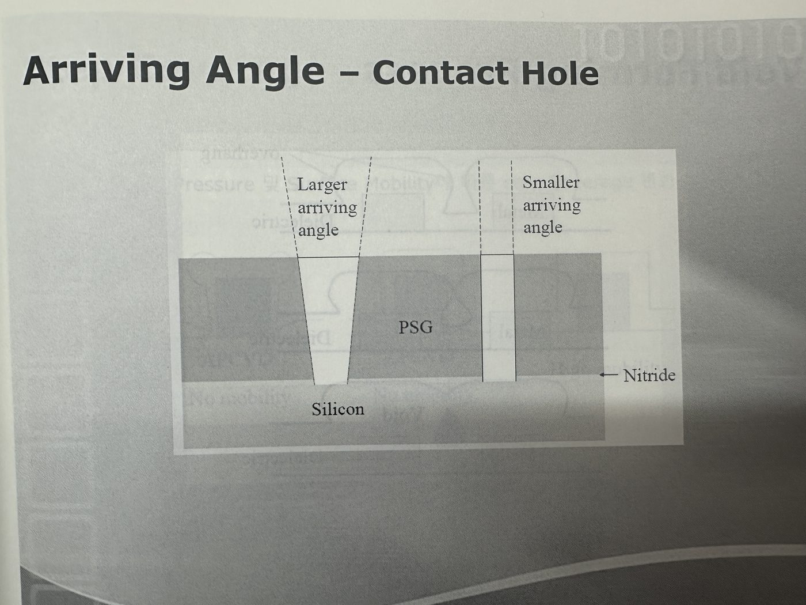
- 각도가 커질수록 더 많이 증착되게 된다.
- 그래서 80g에서 slope이 기울어져 있을 때가 90도보다 크니까 완전 90도 일 때보다 더 증착이 잘 된다.
R = ρL/A
- 단면적이 줄어들면 저항이 증가 그래서 Contact이 어떤 디자인을 갖고 있냐가 저항을 결정하기 때문에 잘 고려해서 생각해야한다. Slope을 주면 잘 들어갈 수 있는데, 그게 Contact의 전기적인 저항과 어떻게 연결되는지를 생각해봐야한다.
- 남아있는 부분의 저항의 단면적을 Overhang을 막기 위해서 작게 만들어버리면 공식에 의해 저항이 커지는 결과로 이어지니 우리가 원하는 상황이 아니다. (저항 증가 → 전류가 흐르는 속도 감소)
- 그래서 Overhang이 되려고 하면 Etch를 시켜주는 것이다. Void가 생기기 전에 Etch를 진행하면서 Depo를 진행하는 것이다. 그래서 실제로 Depo-etch 를 반복하는 방식이 있는 것이다. → HDPCVD
- 그리고 앞서서 얘기했던 SOG(Spin on Glass) 방법도 사용하는 것이다. 하고 CMP를 한다.
86pg
- 여기에서 short가 난다고? 이게 contact 끼리 만난 그림이라는 이해가 안돼.
대상: “여기에서 short가 난다고? 이게 contact 끼리 만난 그림이라는 이해가 안돼.”
다시 보고 이해해보기
88pg
- Depo - Etch - Depo 가 반복해서 사용하는 것은 conformity가 좋은 그리고 gap fill을 잘하기 위함임.
- 이걸 HDPCVD라고 한다.
- 플라즈마를 사용할 때 Ar⁺에 의해 Etch가 되면서 증착이 되는 것이다. 그래서 gas는 depo gas가 나오고 Ar⁺가 Etch 해주고 있는 것이다.
37. Epi 층을 깔아주는 이유 (처음 배움)

Q. 초크랄스키 방법으로 Si 단결정은 무슨 문제가 있는지?
- Si를 만들 때 SiO2 도가니에서 녹여서 만든다. 이에 따라 열처리가 진행되는 온도에서 산소가 Si안으로 녹아들어간다. 그리고 식히는 과정에서 산소가 빠져나가게 되면 공고이 생기고 SiOₓ가 생긴다.
- 그래서 Si 를 만들고 난 다음에 Epi층을 길러 Si층을 다시 깔아주고 이를 통해 전기적인 성능을 좋게 만든다. .
- “PWP 10775” Poly silicon Wafer 의 P type의 비저항이 10 이고 775μm 라는 의미이다.
- 공정을 진행하고 나서 Wafer 뒷면은 갈아주게 되고 40~50μm만 남기게 된다.
38. TEOS (Tetraethyloxysilane)
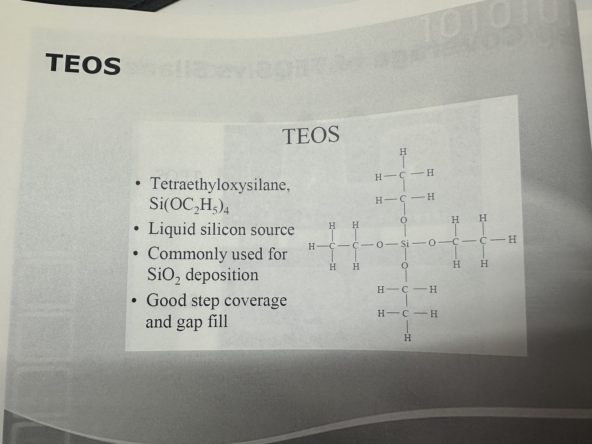
- TEOS는 사용하는 화학 물질의 이름이다.
- PECVD 공정을 했다면 PECVD, LPCVD 공정을 했다면 LPCVD, O3을 사용했다면 O3-TEOS이다.
- 이전에는 SiH4 gas를 사용한 CVD 였던 것이고, 이건 TEOS를 사용하는 것이다.
39. SOG(Spin on Glass)
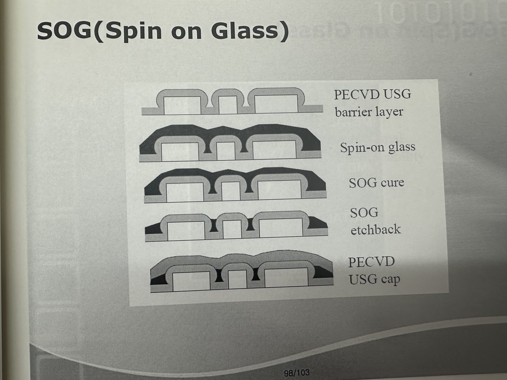
- 액체 SiO2를 웨이퍼 위에 떨어트리게 되면 좁은 틈까지 흘러 들어가게 된다.
- 열에 가해서 SiO2 으로 만들어준다.
- CMP를 통해서 갈아준다.
40. 102pg
- 여기서부터는 미래에 대한 얘기??
- Selective Dielectric
- Thiol Molecule가 Cu와 쉽게 반응할 수 있다.
- ALD가 무조건 Shower type도 아닌게, Gas를 사이드에서 넣어주는 형태가 될 수도 있다.